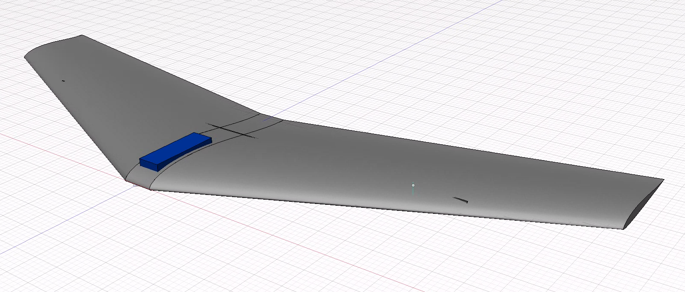

Lakehopper 2 Design
Contents
Lakehopper 2 Design#
Tilt-rotor active vertical takeoff flying wing
This document is very much still a scratchpad.
In the meantime, here’s what Lakehopper 2 will probably look like:

Goals#
Literature#
Lakehopper 1#
Chose conventional monoplane design over flying wing because:
Generally higher efficiency than flying wing
Counter: not significant enough
No tilt rotor necessary
Counter: weight and complexity of floats
Design
Bended foam board + foamboard ribs
Spar: wood
Winglets: no
Power system:
Motor: Propdrive V2 4258 500KV brushless outrunner
Prop: TGS Precision Sport 17x10, non-folding
ESC: YEP 80A
Battery: 6S 4000 mAh LiPo 35C
Thurst:
Design of a Passive Vertical Takeoff and Landing Aquatic UAV#
2017 Richard-Alexandre Peloquin, Dominik Thibault, Alexis Lussier Desbiens
Quebeq, Canada
Sherbrooke University Water-Air VEhicle (SUWAVE)
Passive tilting
2D model of wing and center body during takeoff to determine angle of thrust with respect to center body along with various other parameters
Righting after capsize (center body turns 180 degrees)
Impact modelling: nosedive OK
Design
Solid foam
Carbon spar
Winglets: 75deg??, 8cm??
Center body: PLA
Wings:
Airfoil: NACA M3
Wingspan: 1000mm
Front sweep: 33deg
Back sweep: 17deg??
Root chord: 320mm (.26)
Tip chord: 160mm (.13)
Taper ratio: 0.5
Elevons:
90% of wing width (up to end of wing)
Remaining space (in center): fully filled in with non-moving wing
GS-9018 servos
Rudder: no
Power system:
Motor: EMax CF2822 1200KV brushless inrunner
Prop: 11x6, non-folding
ESC: Turnigy Plush 18A
Battery: 3S 1000 mAh LiPo
Thrust: 911g, TTW: 1.56
Total weight: 584g
Learnings:
Latch mechanism unreliable in windy conditions
Active Vertical Takeoff of an Aquatic UAV#
2020 Étienne Tétreault, David Rancourt, and Alexis Lussier Desbiens
Follow-up of SUWAVE
Active tilting
3D model
XFLR5 analysis
Design
Solid foam + fiberglass
No carbon spar
No winglets
No center body (avionics in wing)
Wings:
Wingspan: 1240mm
Front sweep: 15deg??
Back sweep: 0deg
Mean chord: 250mm
Root chord: 280mm?? (.23)
Tip chord: 130mm?? (.10)
Taper ratio: 0.5
Elevons:
50% of wing width (up to end of wing)
Remaining space (in center): fully filled in with non-moving wing
Servos: ??
Rudder:
Area: 130 cm^2
Length: 13cm??
Height: 10cm??
Power system:
Motor: 300W, other details??
Prop: 12x6, folding
ESC: 30A
Battery: 3C 1000 mAh LiPo
Thrust: ??
Total weight: 865g
Learnings:
Gyroscopic effect from propeller causes undesired yaw during takeoff
Development of an aquatic UAV capable of vertical takeoff from water#
2019 Leonard Waldau
KTH
Model 1: Zagi HP-based
Solid foam (EFP) + tape??
Wooden spar
Winglets: 45 degree, 8cm max??
Center body: separate foam block
Wings:
Airfoil: Zagi 101.4
Wingspan: 1500mm (original: 1220mm)
Front sweep: 28deg??
Back sweep: 10deg??
Root chord: 380mm?? (.25)
Tip chord: 160mm?? (.11)
Taper ratio: 0.42??
Elevons:
80% of wing width (up to end of wing)
Remaining space (in center): partly filled in with non-moving wing
Servos: Hitec HS-5086WP
Rudder: no
Power system:
Motor: Turnigy Aerodrive SK3 3548 1050kv
Prop: Mayatech 12x6.5, folding
ESC: AlfroESC 30A
Battery: 3C 2200 mAh mAh LiPo 30C
Thrust: 1.85kg, TTW: 1.42
Total weight: 1283g
Learnings:
Elevons should be in motor wake for control during takeoff
Elevons should be larger
Model 2: X8 Skywalker-based
Interesting paper on aerodynamics: https://www.researchgate.net/profile/Kristoffer-Gryte/publication/327517108_Aerodynamic_modeling_of_the_Skywalker_X8_Fixed-Wing_Unmanned_Aerial_Vehicle/links/5d886c53458515cbd1b3afd9/Aerodynamic-modeling-of-the-Skywalker-X8-Fixed-Wing-Unmanned-Aerial-Vehicle.pdf?origin=publication_detail
Solid foam (special kind??)
Spar: no
Winglets: 45 degree, 10cm
Center body: separate foam block
Wings:
Wingspan: 2120mm
Front sweep: 27deg
Back sweep: 14deg
Root chord: 450mm?? (.21)
Tip chord: 190mm?? (.08)
Taper ratio: 0.42??
Elevons:
50%
Up to end of wing
Servos: ??
Rudder: no
Power system:
Motor: Turnigy Aerodrive SK3 4250 500kv
Prop: Aeronaut 17x8, folding
ESC: YEP 60A
Battery: 5S 3000 mAh mAh LiPo 30C
Thrust: 1.85kg, TTW: 1.44
Fury Slope Wing#
https://www.rc-factory.eu/letadla/fun-series/rc-factory-fury-slope-wing
Very nimble
Slope soaring
Design
Solid foam?? + tape with contact glue (3M77)
Spar: carbon strips (thin beam), follows front sweep (80% of wingspan), with horizontal strip in center (30% of wingspan)
Winglets: 30deg, 5cm
Center body: no
Wings:
Wingspan: 1200mm
Front sweep: 25deg??
Back sweep: 20deg??
Root chord: ~336mm (.28)
Tip chord: 204mm (.17)
Elevons:
65% of wing width (up to end of wing)
Remaining space (in center): fully filled in with non-moving wing
Servos: MG92B
Rudder: no
Power system: N/A
Total weight: 400-600g
Design & Build of a Flying Wing (With Balsa Wood)#
https://www.youtube.com/watch?v=2YOK1p4iCDo
Design
Balsa ribs + covering foil
Wings:
Wingspan: 723mm
Airfoil MH60
Elevons:
80% of wing width (up to end of wing)
Center space: pusher prop
Servos: FrSky Xact 5700
Power system:
Motor: 1506 4000KV
Prop: ??
ESC: 30A
Battery: 3S 500mAh LiPo
Total weight: 235g
Learnings:
CG needed to be more forward than CL
Add reflex camber
Reverse taper elevons (wider near tips) => reduces wingtip AoA on up-elevon (climb) => reduces tip stalling
Use CA flue instead of UHU
Build on parchment paper
General#
EPP foam in front for better crash resistance
Lakehopper 2#
Design 1
Construction
Wings
One piece each
Hot wire cut
Fuselage
Hot wire cut
PLA printed inserts for motor mount
Front spar
500mm
Back spar
1000mm
Wings
Center section: 60mm
Wing length: 720mm
Wingspan: 1500mm
Front sweep: 25deg
Back sweep: 16deg
Root cord: .24 => 360
Tip cord: .12 => 180
Calculated:
Wing area (simple): (60 * 360) + ((700 * 2) * ((360 + 180) / 2)) = ~225000mm^2 = 39.96dm^2
Wing area (a0001 calc V3): 41.04dm^2
Chassis CG (50% area): ~285mm
Desired CG (10% area): ~195mm
Power system:
Prop:
Diameter: 13-17inch
Pitch to diameter ratio (d/p): .5 - .75
For example:
15.5inch diameter => 7.75 to 11.63inch pitch
Battery: 3S 3000mAh LiPo 70C
Weight:
Front spar: 18g
Back spar: 36g
Nuts & bolts: 10g
Servos & linkages: 84g
Foam:
Volume: 270 * 1500 * 2 = 810000mm^3
Density: 0.5g/cm^3
Weight: 810cm^3 * 0.5g/cm^3 = 405g
ESC: undecided - 100g
FPV: 30g
RC Receiver: 5g
Telemetry transceiver: 10g
Battery: 280g
Prop: undecided - 70g
Raspberry Pi 4: 50g
Camera: 10g
Total:
18+36+10+84+405+100+30+5+10+280+70+50+10
Without motor: 1108g
With 400g motor: 1508g
Thrust to weight ratio:
Goal: 1.50 with motor
Required thrust: 1962g (2kg)
Lithium polymer is by far the most common battery chemistry with RC enthusiasts. LiPo batteries are more power dense than those with an older nickel metal hydride (NiMH) or nickel–cadmium (NiCad) chemistry. Even more power dense than LiPo batteries are lithium-ion batteries. However, LiPo batteries are generally more leak-resistant and rigid than their lithium-ion counterpart. These two properties make them safe for RC aircraft, which need to endure hard landings and intensive use. Given these considerations, and the precedent set by the previously considered models, Lakehopper 2 will use a LiPo battery.
TODO: Cell count
Electric motors for RC aircraft are usually specified in terms of the motor constant Kv as well as the maximum safe current. The motor constant Kv specifies the rotational speed of the motor in revolutions per second per volt when not under load. Given equal voltage, the higher the Kv rating, the faster the motor will spin.
The maximum current specification needs to be respected in order to prevent the motor from overheating. Larger motors with thicker winding wires have a higher maximum current because they do not heat up as much as smaller motors with thin wires. Putting a large propeller on such a small motor and driving it with a high voltage could cause the wires to melt or the ESC to fail. A less severe consequence of over-driving a motor is that its efficiency decreases.
Because the load on the motor will be highest during vertical takeoff, the propeller should perform at a high efficiency during this phase. If the plane were not required to be able to take off vertically it would be more important to optimize efficiency during level flight. As with all design considerations though, a balance should be struck.
At low airspeeds, the propellers actual pitch (a.k.a. effective pitch) is lower
than its geometric pitch. The plane would need to be moving at a speed of
GeometricPitch x RPM for the effective pitch to equal the geometric pitch.
This difference is referred to as pitch ‘slip’. A high pitch slip lowers the
propeller’s efficiency.
As discussed before, efficiency during takeoff (low airspeed) is important. Therefore the propellers pitch to diameter ratio should be relatively low (nearing 1/2 vs 1/1).
Design 2 - Power system A
Prop: 15.5x9.5 folding https://hobbyking.com/en_us/folding-propeller-w-hub-55mm-5mm-shaft-15-5x9-5-1pc.html
Battery: 4S 3300mAh LiPo
Motor:
To achieve a pitch speed of around ~70km/h => 330..420rpm/V
=> min. 250W motor (min. 17A at nominal 14.8V of 4S battery)
=> min. 25A ESC (17A + buffer of ~1.5)
Candidate:
PROPDRIVE v2 5060
380KV
max 90A
438g
Weight:
1108g + 438g = 1546g
Thrust
Required for 1.5 T/W: 2319g
Max: 2364g / 1.5 T/W (87.8% efficient)
~80% throttle: 1580g / 1.0 T/W (85.8% efficient)
Design 2 - Power system B
Prop: 12x7 folding https://hobbyking.com/en_us/folding-propeller-w-alloy-hub-45mm-4mm-shaft-12x7-1pc.html
Battery: 4S 3300mAh LiPo
Motor:
To achieve a pitch speed of around ~70km/h => 640..940rpm/V
=> min. 350W motor (min. 24A at nominal 14.8V of 4S battery)
=> min. 35A ESC (24A + buffer of ~1.5)
Candidate:
SK3 4240
740KV
max 59A
195g
Weight:
1108g + 195g = 1303g
Thrust
Required for 1.5 T/W: 1955g
Max: 2770g / 2.1 T/W (90.1% efficient)
~80% throttle: 1930g / 1.5 T/W (89.5% efficient)
Design 2 - Power system C
Prop: 12x7 folding https://hobbyking.com/en_us/folding-propeller-w-alloy-hub-45mm-4mm-shaft-12x7-1pc.html
Battery: 4S 3300mAh LiPo
Motor:
To achieve a pitch speed of around ~70km/h => 640..940rpm/V
=> min. 350W motor (min. 24A at nominal 14.8V of 4S battery)
=> min. 35A ESC (24A + buffer of ~1.5)
Candidate:
PROPDRIVE v2 4238
750KV
max 55A
156g
Weight:
1108g + 156g = 1264g
Thrust
Required for 1.5 T/W: 1896g
Max: 2618g / 2.0 T/W (84.1% efficient)
~80% throttle: 1830g / 1.4 T/W (83.9% efficient)
Design 2 - Power system D
Prop: 12x7 folding https://hobbyking.com/en_us/folding-propeller-w-alloy-hub-45mm-4mm-shaft-12x7-1pc.html
Battery: 4S 3300mAh LiPo
Motor:
To achieve a pitch speed of around ~70km/h => 640..940rpm/V
=> min. 350W motor (min. 24A at nominal 14.8V of 4S battery)
=> min. 35A ESC (24A + buffer of ~1.5)
Candidate:
PROPDRIVE v2 3536
910KV
max 38A
88g
Weight:
1108g + 88g = 1196g
Thrust
Required for 1.5 T/W: 1794g
Max: 2902g / 2.4 T/W (77.6% efficient)
~80% throttle: 2123g / 1.8 T/W (79.5% efficient)
Wing shape:
Washout: tip angle of incidence lower to slow tip stall Wingtips:
reduce wingtip vorteces (increases efficiency, slows tip stall)
increases yaw stability
Reflex: increases pitch stability (acts as tail in traditional plane) https://www.youtube.com/watch?v=gkb11eKXM14
Swept wing:
increase pitch stability
increase elevon authority
move chassis CG and CP further apart (increases stability)
Airfoil:
MH60
10.1% max thickness
1.7% max camber
very small reflex
vs
S5010
9.8% max thickness
1.8% max camber
small reflex
Choice: S5010
Build-in reflex => need less elevon reflex
Washout:
3 degrees
Wingtips:
Create vortexes
Elevons:#
Semseg#
Video processing#
Shot boundary detection#
Use average of chi-square distance between 16x16 grids histograms. ‘Keyframe’ is middle frame of shot (between two boundaries).
Only keyframes are used in semseg dataset.
Used by:
S. et al., 2019
Average distance threshold: 0.2 (experimentally)
Labeling tools#
LabelMe#
Used by:
S. et al., 2019
Wu et al., 2019
GOFAI#
Random forest#
Used by:
Bhatnagar et al., 2020
number of trees: 100 (1000 samples with repetition)
total number of splits: 5853
Also tried with textural properties (contrast, correlation, energy, homogeneity, mean, variance, entropy, range, skewness, kurtosis)
Pixel accuracy (a.k.a. OA/Overall accuracy): 83.3% (w/o textural properties), 85.1% (w/ textural properties)
CNN#
FCN#
Fully Convolutional Neural Net
Used by:
Long et al., 2015 (original)
S. et al., 2019
FCN32
Backbone: VGG16
Directly from dense representation frame to output layer (no stepwise decoder)
80, 10, 10 split
Transfer learning: no
Augmentation: no
Batch size: 10
Epochs: 100
Pixel accuracy: 89.7%
Wu et al., 2019
Backbone: ResNet-50
80, 20 split
Transfer learning: yes
Wu et al., 2018 (PolSAR): https://github.com/winggy/PolSAR-scene-classification-dataset
AstarLight (RGB, not usable: Beidu): https://github.com/AstarLight/Satellite-Segmentation
Augmentation:
Rotation 90, 180, 270 (*3)
Flipping hor, ver (*2)
Bath size: ?
Epochs: >40
Pixel accuracy: 84%
Bhatnagar et al., 2020 (bog Ireland)
Backbone: ResNet-50
Transfer learning: yes (imagenet)
Augmentation: no
Batch size: 64
Epochs: 100 (saturated after 35)
Pixel accuracy: 89.9%
FPN#
Feature Pyramid Network
U-Net#
Todo:
First U-Net??: Ronneberger et al., 2015: U-net: Convolutional networks for biomedical image segmentation
Daudt et al., 2018: Fully convolutional siamese networks for change detection
Daudt et al., 2018: Urban change detection for multispectral earth observation using convolutional neural networks
Celik, 2009: Unsupervised change detection in satellite images using principal component analysis and k-means clustering
Used by:
S. et al., 2019: Semantic segmentation of UAV aerial videos using convolutional neural networks
RGB
Original resolution: 1280x720
Scaled to 256x256
80, 10, 10 split
Transfer learning: no
Augmentation: no
Batch size: 10
Epochs: 100
Pixel accuracy: 87.31%
Has trouble with dark/light areas (maybe use brightness augmentations to fix?)
Architecture
Encoder:
4 Stages
Conv + ReLu activation, doubling features
Conv + ReLu activation
Transition:
Max pooling 2x2 kernel downscale (relevant feature selection)
Encoded frame (dense representation):
Features: 64*(2**4) = 1024
Resolution: 256/(2**4) = 16
Decoder:
5 Stages
Conv + ReLu activation, halving features
Conv + ReLu activation
Transition:
Upsampling + conv
Combine with corresponding encoder frame
Wu et al., 2019
Backbone: ResNet-50
80, 20 split
Transfer learning: yes
Wu et al., 2018 (PolSAR): https://github.com/winggy/PolSAR-scene-classification-dataset
AstarLight (RGB, not usable: Beidu): https://github.com/AstarLight/Satellite-Segmentation
Augmentation:
Rotation 90, 180, 270 (*3)
Flipping hor, ver (*2)
Bath size: ?
Epochs: >40
Pixel accuracy: 84%
Architecture: same as S. et al.
Bhatnagar et al., 2020
As opposed to GOFAI ML: does not require color correction or the addition of extra textural features
Backbone: ResNet-50
Transfer learning: yes (imagenet)
Augmentation: no
Batch size: 64
Epochs: 100 (saturated after 35)
Pixel accuracy: 91.5%
Evaluation#
MIoU
Mean Intersection over Union
Used by
S. et al., 2019
PA
Pixel Accuracy
Used by
S. et al., 2019
F1-score
Mean Intersection over Union
Used by
S. et al., 2019
Datasets#
Todo:
Bonetto et al.: Privacy in mini-drone based video surveillance
Lyu et al.: UAVid: A semantic segmentation dataset for UAV imagery
Robicquet et al.: Learning Social Etiquette: Human Trajectory Understanding in Crowded Scenes
Campus crossings and paths (social interactions)
Pictures from quadcopter
~30m 15deg
Frames: 100+ unique (a lot more per location)
Resolution: 1400x1904
Classes: 6: road, roundabout, sidewalk, grass, building, bike rack
Background class: no
S. et al., 2019: Semantic segmentation of UAV aerial videos using convolutional neural networks
Suburb/campus asphalt roads with parking spaces (Manipal, India)
Videos from DJI quadcopter
~25m 25deg
Frames: 2494
Resolution: 1280x720
Classes: 2: greenery, road
Background class: no
Wu et al., 2019
Polsar (not RGB) => not usable
Bhatnagar et al., 2020
Of bog in Ireland => not applicable
UAVID:
Oblique => not applicable
Drone deploy
https://www.kaggle.com/datasets/mightyrains/drone-deploy-medium-dataset
Classes: 6: building, clutter, vegetation, water, ground, car
Verdict: keep only: water, ground, and building
UVid-Net:
Should cite: S. Girisha, M. M. M. Pai, U. Verma and R. M. Pai, “Performance Analysis of Semantic Segmentation Algorithms for Finely Annotated New UAV Aerial Video Dataset (ManipalUAVid),” in IEEE Access, vol. 7, pp. 136239-136253, 2019. doi: 10.1109/ACCESS.2019.2941026
Girisha S, U. Verma, M. Pai and R. M. Pai, “UVid-Net: Enhanced Semantic Segmentation of UAV Aerial Videos by Embedding Temporal Information,” in IEEE Journal of Selected Topics in Applied Earth Observations and Remote Sensing, doi: 10.1109/JSTARS.2021.3069909.
Verdict: email sent, didn’t answer
Aggregated dataset:
Dronedeploy
chips: 10325
iv-ortho-mid
233n
chips: 512
218z
chips: 1600
Aggregated
chips: 12.437
TODO: Areas of improvement:
Make semi-supervised system (show 10*10 patch => ask “water or ground” => change mask transparency)